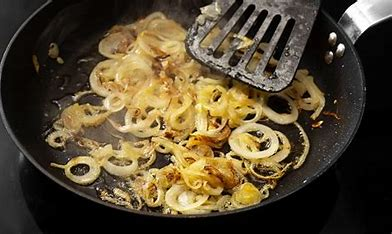
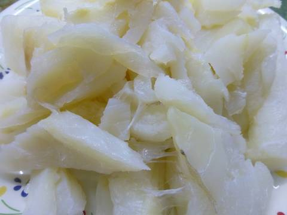
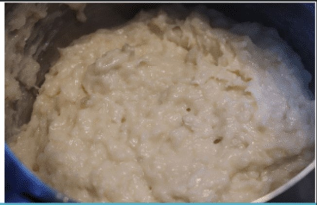

Pimientos de piquillo rellenos de bacalao
by Eva Cristóbal
Ingredientes para 4 personas
- 250g de bacalao desalado y desmigado
- 12 Pimientos del piquillo
- 1 Cebolla grande, picada finamente
- 2 Dientes de ajo, picados
- 1 tomate maduro, rallado
- 50ml de aceite de oliva virgen extra
- 1 cucharada de perejil fresco (opcional)
- 50ml de vino blanco
- 200ml de caldo de pescado
- Sal y pimienta al gusto
- Harina para rebozar
Elaboración
-
Para hacer el relleno ponemos el aceite en una sartén, añadimos la cebolla muy picada, así como los ajos también picado muy menudo, dejamos cocinar todo durante diez minutos más o menos.
 - Añadimos entonces los lomos de bacalao que habremos desalado, durante un día o dos, dependiendo del grosor, cambiándole el agua frecuentemente y manteniéndolo siempre en la nevera. 
- Según se va cocinando el pescado lo vamos separando las lascas. Cuando deje de estar transparente añadimos la harina, removiendo bien para que se cocine durante unos minutos.
- Agregamos las gambas y rehogamos todo junto.
- Seguidamente vamos añadiendo la leche para formar la bechamel. Cocemos sin dejar de remover hasta que espese, rectificamos de sal, retiramos y dejamos enfriar. 
- Para la salsa, comenzaremos picando la cebolla y los ajos en el aceite. Cuando ya está transparente añadimos los pimientos y salteamos todo junto durante cinco o seis minutos. Agregamos la nata líquida y dejamos reducir, trituramos con una batidora.
- Cuando la salsa está hecha, rellenamos los pimientos con la farsa, los colocamos en una cazuela, vertemos por encima la salsa y los horneamos durante 15 minutos a 180 grados.
Sabías que....
... los pimientos del piquillo rellenos de bacalao son un plato clásico de la gastronomía española, y muy particularmente de Pamplona, que combina la dulzura de los pimientos asados con el sabor salado y delicado del bacalao.
Esta receta, que se remonta a siglos atrás, ha perdurado en el tiempo como un símbolo de la rica tradición culinaria de España.
Los pimientos del piquillo son una variedad de pimientos rojos pequeños y dulces originarios de la región de Navarra. Su nombre proviene de la forma puntiaguda («piquillo» significa «puntiagudo» en español) que adquieren al ser asados. Se dice que esta variedad de pimientos fue introducida en España por los jesuitas en el siglo XVI, y desde entonces se ha convertido en un ingrediente emblemático de la cocina española.
Por otro lado, el bacalao es un pescado muy apreciado en la gastronomía española, especialmente en las regiones costeras del norte. Durante siglos, el bacalao seco y salado fue un alimento básico en la dieta de los españoles, ya que se podía conservar durante largos períodos de tiempo sin necesidad de refrigeración.
La combinación de estos dos ingredientes, los pimientos del piquillo y el bacalao, dio lugar a un plato que rápidamente se convirtió en un clásico de la cocina pamplonica, apreciado tanto en el ámbito doméstico como en los mejores restaurantes del país.